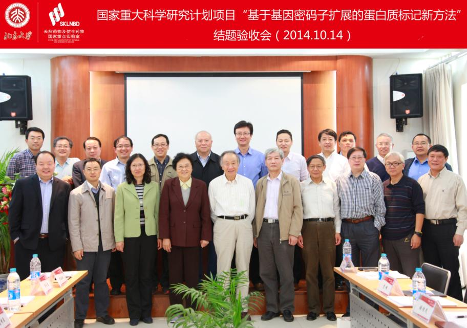

2014年10月14日，由北京大学作为依托单位的国家重大科学研究计划项目“基于基因密码子扩展的蛋白质标记新方法”课题验收会在天然药物及仿生药物国家重点实验室举行，参加的四个课题组分别来自北京大学化学学院、中科院生物物理所和北京大学药学院。科技部基础司朱庆平处长全程出席会议，课题验收专家包括中国科学院上海生命科学研究院王恩多院士、南京大学华子春教授、军事医学科学院范明研究员、北京大学昌增益教授和张传茂教授、北京大学医学部张礼和院士、唐朝枢教授、马大龙教授、张强教授、朱卫国教授、张毓教授和北大医学部科研处沈如群处长。药学院院长刘俊义教授和书记徐萍教授等应邀出席验收会，课题负责人王江云研究员、陈鹏研究员、苗龙研究员及课题研究骨干等60余人出席会议。
验收报告会由项目首席科学家周德敏教授主持。科技部朱庆平处长首先介绍了科技部对课题的验收要求，沈如群处长和刘俊义院长分别欢迎词。然后项目首席科学家周德敏教授从项目简介、课题设置、人才培养、科研经费及评价标准等五个方面对项目进行了全面介绍。四位课题负责人逐一对课题进行了较为详尽的总结汇报。项目紧紧围绕“基于基因密码子扩展的蛋白质标记新方法”的关键科学问题，通过基因密码子扩展技术，建立了对非天然氨基酸具有特异性的氨酰tRNA合成酶的高通量筛选系统、普适性基因编码子拓展平台，发展了光点击化学标记蛋白质的方法，实现了非天然氨基酸在活病毒在体蛋白及其他蛋白上的高效、定点、特异的标记、非天然氨基酸标记蛋白质功能的光调控、新型可逆荧光蛋白的超高分辨率成像等等，在此基础上，开发了一系列蛋白质标记和操纵工具，解析了多种蛋白/非天然氨基酸的复合物结构，拓展了基因密码子扩展在蛋白质-蛋白质相互作用、单病毒感染细胞的荧光示踪、蛋白质及抗体药物的定点修饰、靶向基因治疗病毒载体等领域中的应用，这一系列研究不仅对蛋白质化学生物学、分子生物学、分子病毒学、细胞生物学等相关学科的发展都具有重要的意义，而且对重大创新药物专项、基因治疗等医药学科具有重要影响。
验收专家组在认真听取了各课题负责人的总结汇报后，从计划任务完成情况、研究水平及创新性、人才培养等方面进行了提问，并对各课题进行了总体评议和验收。专家组对各个课题取得的诸多研究成果给予了高度评价，一致认为各课题均圆满完成了课题计划任务，实现了预期目标，取得了多项创新性成果，课题组织管理规范，并对课题后期的研究给予了建议和展望。经过讨论，专家组最终形成了各个课题的验收意见，一致同意四个课题以优的成绩顺利通过验收。截至目前，项目已经发表和已录用SCI论文130篇，其中在Nature系列发表论文7篇，在PNAS、JACS等学科顶尖杂志发表论文50篇，申请国内外专利23项，建立多项生物关键技术平台和取得多个生物候选药物，培养了一批优秀中青年人才，包括国家自然科学基金委杰出青年科学基金获得者3人，教育部长江学者1人，中科院百人计划2人，北大百人计划1人。
天然药物及仿生药物国家重点实验室 供稿